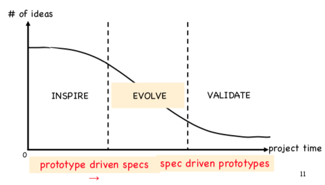

HCI is concerned with design, evaluation, implementation of interactive computer systems
how people use software & computing devices. usability engineering:
- design
- evaluation
- implementation of interactive computing systems
why is it important? because sites have shitty UIs and UXs and we've all had to use them & it sucks
website metrics: volume of business, num of unique visitors, conversion rate from visitor to customer, loyalty rate, bounce rate, pages viewed per visit
business metrics: conversion rates, traffic numbers, user performance, target feature usage
- form: graphic design, product design
- content: information architecture, audio-visual, text
- behaviour: interaction design observation
UX deliverables:
- analysis & research: personas, qualitative user research/reports, user stories, competitive analysis, scorecards
- design: functional specs, flow diagrams, UI specs
- prototypes: clickable prototypes, mockups
- visual design: polished design & layout, icons & graphic things
- technical communications: web content, help, guides, videos, localization
Terms of interaction:
- domain: area of work under study (like graphic design)
- goal: what you want to achieve
- task: how you go about doing it, in terms of operations/actions
gulf of execution: user's formulation of actions ≠ actions allowed by the system gulf of evaluation: user's expectation of changed system state ≠ actual presentation of that state
human errors:
- slip: incorrect action (need better interface design)
- mistake: may not have the right goal (need better understanding of system)
goals:
- efficiency/productivity? effective learning?
-
usability goals: meeting specific usability criteria
- effectiveness
- efficiency (minimal steps, simple)
- safety (does the system prevent users from fuckin up?)
- learnability: people are impatient, manuals are tedious, nobody wants to fuckin do it. they should be able to learn the system in under 10 minutes.
- utility: the extent to which system provides functionality that user needs
- memorability: meaningful icons, command names, menus, so that the user can remember shit without always having to go back to the manual
-
user experience goalz: develop the quality of the user experience (
a e s t h e t i c, games)- design isn't just about efficiency and productivity
- the point is, do you feel nice and warm inside while using the system?
-
Visibility
- if more stuff is visible, the user's more likely to know what to do next
- when functions are hidden, it makes them more difficult to find and know how to use
-
Feedback
- send back info about what actions have been done, what's bee accomplished
- audio, tactile, verbal, etc.
-
Constraints
- determine ways to restrict possible kind of user interaction
-
Mapping
- relationship between controls and their effects in world
- e.g. up/down arrows to represent up/down movement of cursor
-
Consistency
- design interfaces that have similar operations and elements for similar tasks
- follows rules
-
Affordance
- refers to an attribute of object that allows people to know how to use it
- e.g. mouse button invites pushing
- 'afford': 'give a clue'
Nielsen usability principles:
-
Visibility of system status
- always keep user informed about what's happening
- like a progress bar
-
Match between system and real world
- speak the users' language
- use words, phrases, concepts familiar to user
-
User control and freedom
- allow users to easily escape from places where they accidentally appeared
- like 'emergency exits'
-
Consistency and standards
- don't make the user think
- avoid making them wonder whether different shit is actually the same shit
-
Help users recognise, diagnose, and recover from errors
- write errors in plain language
- suggest a way of solving it.
-
Error prevention
- prevent errors whenever possible
-
Recognition is better than recall
- make stuff recognisable
-
Flexibility and efficiency of use
- provide accelerators invisible to novices
- give more experienced users more tools
-
Aesthetic & minimalist design
- don't include irrelevant or rarely needed information
- hide the stuff
-
Help and documentation
- provide info that can be easily searched
- give concrete steps that can be easily followed
Prototype: representation of design before final version exists. Can be low fidelity to high fidelity media.
options for prototypes: sketches, diagrams, frameworks, hand made models, graphics, virtual models, role play, video, etc.
why? to evoke reactions from stakeholders (find out what to add/change), to test feasibility, choose between alternatives, etc. it's faster than changing the real thing.
Waterfall model
- long lifecycle, step by step
- does not work
Iterative prototyping
- more like an agile method
- each iteration is short (2-6 weeks)
- do minimum necessary
- after every iteration you get feedback
- system grows incrementally
quality is a function of num of iterations & refinements before production. fail early and often.
3 stages of prototyping:

choose what to prototype for, identify measurable design goals
Describe the user's journey:
- Who is the user?
-
How do they discover the app/site?
- let's assume for our project that they were recommended our app
- How do they use it?
- How do they benefit from it?
Aim to show why the app/site will work.
Prototyping:
-
Low fi (early stage)
- Use whatever works (paper and pen, photo, video, whatever)
- Paper prototypes: when you have many ideas, parts are unclear, basically if you're gonna throw away stuff
-
Medium fi
- Don't add filler text
- Wireframing: idea needs more detail than on paper, colors, clients need to see major design options
- Mockups with wood, play doh, whatever. Just fake the design
- Wizard of Oz: some aspects of interface are implemented, operation needs processing that's actually done by a human for now
-
High fi
- Screen mockups (illustrator, photoshop, whatever)
- Clickthroughs (slideshow type stuff)
- Web tools (like Bootstrap)
-
Web prototypes
- plain HTML/CSS
- use when systems is intended to run on the web
-
Small screen prototypes
- JS (all phones have a browser, JS has a lot of functionality)
- can add events, interactions, etc.
- you can use mobile emulators on desktop
- but it's hard to prototype touch gestures (JS works decently)